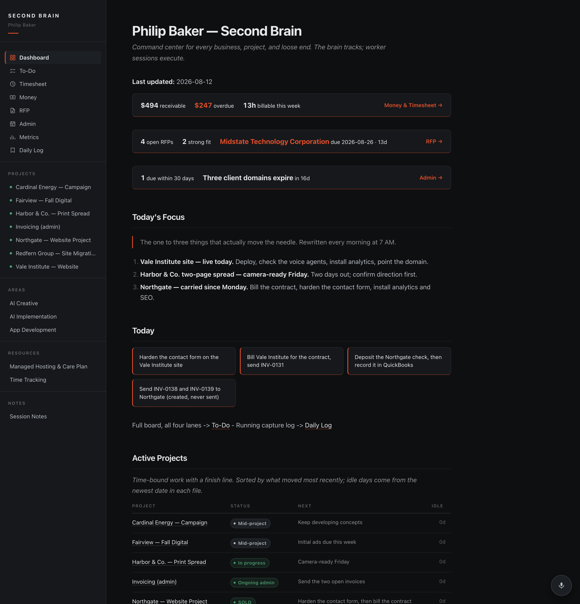
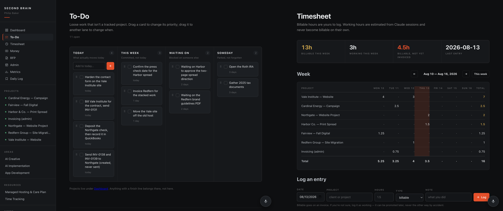
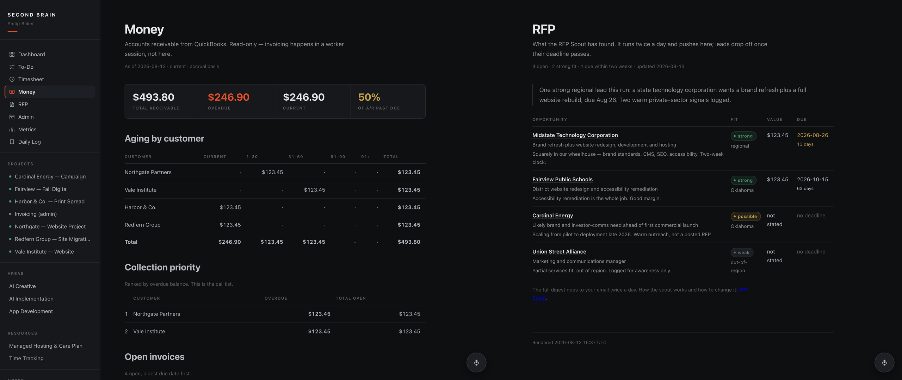
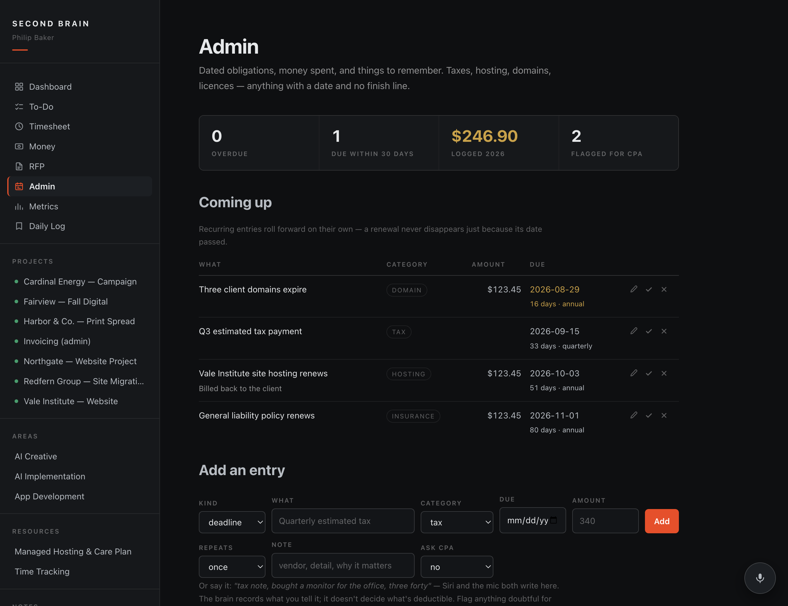

Case study — Operations
I run several at once. The tracking was spread across ten different places — my memory, a spreadsheet, three invoicing tabs, an email folder, and a dashboard that had gone stale eight days before I noticed. Now it's one page, and I can talk to it from the car.
The problem
No crisis. No fire. Just the ordinary drift of running more than one business by yourself: an invoice created but never sent, a hosting renewal nobody was watching, a promise made on a call that never made it onto a list.
I had tools. That was the issue — too many, none of them talking to each other. The dashboard I'd built to fix it needed me to sit at a desk and update it. So it stopped getting updated, and by the time I looked again it was more than a week out of date and I trusted it less than my own memory.
A management system you have to remember to update is not a management system. It's another thing on the list.
What changed
Before I built this, I was tracking ten things about my own businesses. Here's where each one actually lived:
Ten places, one of which was nowhere. None of them talked to each other, so the real answer to any question — am I ahead or behind this month? — meant opening five of them and doing arithmetic. So I mostly didn't ask.
All ten are now one page. Projects, to-dos, hours, receivables, incoming work, tax notes, renewals — one screen, one search, one login.
Here's the part I want to be clear about, because it's the part people assume wrong: I didn't buy anything. No new platform, no new seat licenses, no migration weekend, nothing to move my data into and get locked to. QuickBooks is still the books. The registrar is still the registrar. My files are still my files, plain text, on my own machine.
This is a layer on top of what I already had — it reads from those systems, puts the answers in one view, and lets me talk to it. Nothing got replaced, so nothing had to be learned twice or paid for twice. That's also why it can't strand me: pull the layer off tomorrow and every underlying system is exactly where it was.
Consolidating the view was worth doing on its own. It still isn't the reason this one stuck.
It stuck because I never have to go to it to put something in. And there are exactly two places I ever am — so there are two ways in, and no third thing to remember.
On the go: the side button on my phone. I'm in the car between a shoot and a client meeting, I hold it, I talk, it's recorded before I've pulled out of the lot. At the office: a microphone on every page of the site. Same voice, same brain, whichever one is closer. Four seconds later it reads back what it wrote, so I know it heard me.
That last group matters as much as the capture does. Asking "what's my A/R" out loud while I'm driving is a question I'd never have asked otherwise — not because it's hard, but because it used to mean a laptop, a login, and a report. Lowering the cost of a question means you ask more of them, and that's most of what being on top of a business actually is.
One rule matters more than the rest: it will not log anything billable unless I say the word "billable." Everything else goes down as working time and it says so out loud. A wrong billable entry ends up on a client's invoice. A wrong working entry costs nothing. It's built to make the cheap mistake, never the expensive one.

The work
Most tools mash them together, your task list hits 200 items, and you stop opening it. Projects have a finish line. To-dos are the loose stuff — call this person, send that invoice, deposit the check. So they're separate: four lanes, cards I drag around when priorities move, which they do daily. It works on the phone, because that's where I am when they move.
Hours land the same way. The panel I actually open is the one showing billable time that hasn't been invoiced yet, checked against what's already gone out the door.

Money out, work in
Receivables come straight out of QuickBooks onto a page I actually look at, ranked by who's furthest behind. That's the call list. It's read-only on purpose — the system shows what's owed and points at the work; it doesn't send invoices or move money. I decide that.
New business used to reach me by accident. Now something goes looking every morning: state and city procurement portals, school districts, regional postings, plus the softer signals — a company announcing a launch is a prospect before there's ever an RFP. It scores each one against what I actually sell. Anything strong also shows up in my afternoon text, because a two-week clock shouldn't depend on me remembering to check a page.

The rest of it
Quarterly estimates. Domain expiries. Insurance. The monitor I bought for the edit bay that I will absolutely not remember next spring. None of these are projects — no finish line, they just come around. They go in the same way as everything else, and recurring ones roll forward on their own so a renewal never vanishes because its date passed. When I'm not sure something's deductible it flags it for my accountant rather than guessing; the system keeps records, it doesn't give tax advice.
Three things then run daily on their own. 7 AM pulls fresh receivables, folds in yesterday's work, rewrites today's priorities and texts me the short version. 9 AM goes looking for work. 2 PM reads what my working sessions actually did and texts me the end of the day — even on a quiet day, because "nothing moved" is information too.
The part I didn't expect
The afternoon check-in catches commitments I made out loud and never wrote down. A date mentioned in passing, a "sure, I can have that by Friday." Those used to live in my head until they didn't.

Where it landed
I don't have a chart showing this made me thirty percent more efficient. Nobody has that number. They make it up. Here's what I can actually point at:
It didn't arrive finished. It started as a plain markdown folder in mid-July and grew a piece at a time between client jobs — the voice capture, then the money page, then the thing that watches for work. Every piece got added because something slipped and I got tired of it slipping.
The dashboard is current because updating it costs four seconds instead of a sit-down. Invoices don't sit created-but-unsent. I stopped losing commitments I made on the phone. And because it's a layer rather than a platform, the whole thing is plain text I own — nothing here can raise its price, change its terms, or shut down and take my data with it.
The real return isn't hours saved. It's that I'm not carrying it all anymore. I stopped waking up at two in the morning trying to remember whether I sent that invoice, because the answer is somewhere other than my head now. A clear head is a smart head. That's most of what this bought.
The win isn't automation. It's that the gap between "something happened" and "it's recorded" got small enough that I actually do it.
Work with us
That's the problem I know how to solve. Not "let's add AI to it" — a system built around how you actually work, that captures things at the moment they happen instead of asking you to come back later.
You don't have to replace anything. Keep your accounting, keep your CRM, keep the spreadsheet you like. This goes on top: it reads what you already run, puts the answers in one place, and lets you talk to it from wherever you actually are. No migration, no new seats, nothing to learn twice.
I build these for other operators: agencies, contractors, studios, professional practices. Anyone running several things at once who's tired of the answer living in ten places.
Start with a conversation. Tell me what keeps slipping, and I'll tell you honestly whether this approach helps — or whether you just need to fix a process.